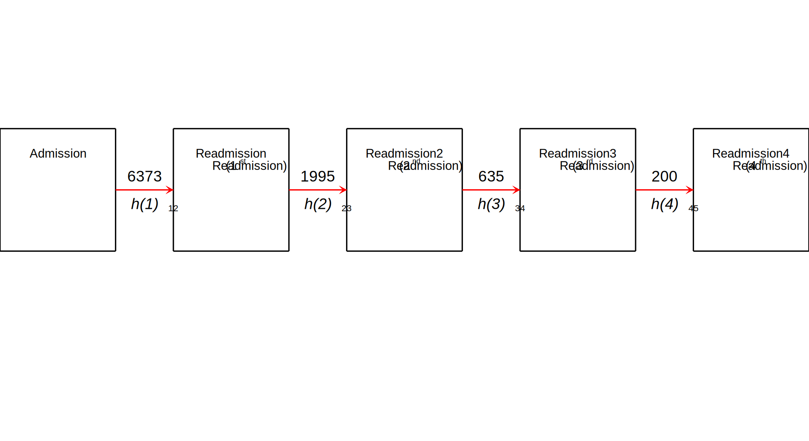
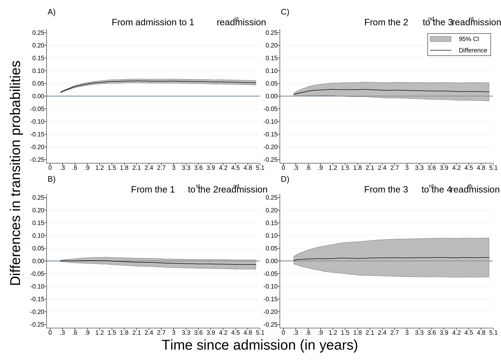
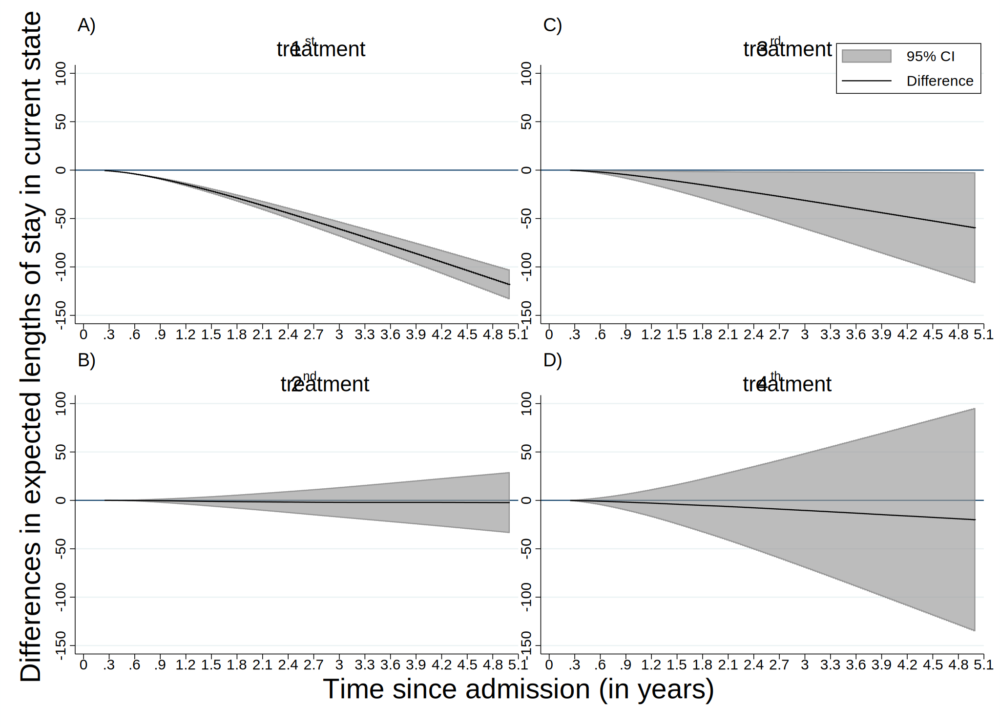

Date created: 26 Sep 2022.
Install commands that are unavailable or out of date.
. clear all
.
. cap noi which predictms
C:\Users\CISS Fondecyt\ado\plus\p\predictms.ado
*! version 4.4.0 22dec2021 MJC
. if _rc==111 {
. cap noi net install multistate, from("https://www.mjcrowther.co.uk/code/multistate")
. }
. cap noi which merlin
C:\Users\CISS Fondecyt\ado\plus\m\merlin.ado
*! version 2.1.5 18mar2022 MJC
. if _rc==111 {
. cap noi net install merlin, from("https://www.mjcrowther.co.uk/code/merlin/")
. }
. cap noi which sumat
C:\Users\CISS Fondecyt\ado\plus\s\sumat.ado
*! Part of package matrixtools v. 0.25
*! Support: Niels Henrik Bruun, niels.henrik.bruun@gmail.com
*! 2021-01-03 toxl added
. if _rc==111 {
. cap noi scc install matrixtools
. }
. cap noi which estwrite
C:\Users\CISS Fondecyt\ado\plus\e\estwrite.ado
*! version 1.2.4 04sep2009
*! version 1.0.1 15may2007 (renamed from -eststo- to -estwrite-; -append- added)
*! version 1.0.0 29apr2005 Ben Jann (ETH Zurich)
. if _rc==111 {
. cap noi ssc install estwrite
. }
.
. cap noi which scurve_tvc
C:\Users\CISS Fondecyt\ado\plus\s\scurve_tvc.ado
. if _rc==111 {
. cap noi net install st0458.pkg
. }
. cap noi which strmcure
C:\Users\CISS Fondecyt\ado\plus\s\strmcure.ado
*! Version 4.0 31-Aug-2015
. if _rc==111 {
. net install st0374_1.pkg
. }
. cap noi which stjmgraph
C:\Users\CISS Fondecyt\ado\plus\s\stjmgraph.ado
*! version 1.0.2 01Jun2011 MJC
. if _rc==111 {
. net install st0289.pkg
. }
We need to obtain the file and the work folder.
. mata : st_numscalar("OK", direxists("/volumes/sdrive/data//"))
. if scalar(OK) == 1 {
. cap noi cd "/volumes/sdrive/data//"
. global pathdata "/volumes/sdrive/data//"
. di "Location= ${pathdata}; Date: `c(current_date)', considering an OS `c(os)' for the user: `c(username)'"
. }
. else display "This file does not exist"
This file does not exist
.
. mata : st_numscalar("OK", direxists("E:\Mi unidad\Alvacast\SISTRAT 2019 (github)\_mult_state_ags\"))
. if scalar(OK) == 1 {
. cap noi cd "E:\Mi unidad\Alvacast\SISTRAT 2019 (github)\_mult_state_ags"
. global pathdata "E:\Mi unidad\Alvacast\SISTRAT 2019 (github)\_mult_state_ags"
. global pathdata2 "E:/Mi unidad/Alvacast/SISTRAT 2019 (github)/_mult_state_ags/"
. di "Location= ${pathdata}; Date: `c(current_date)', considering an OS `c(os)' for the user: `c(username)'"
. }
. else display "This file does not exist"
This file does not exist
.
. mata : st_numscalar("OK", direxists("G:\Mi unidad\Alvacast\SISTRAT 2019 (github)\_mult_state_ags\"))
. if scalar(OK) == 1 {
. cap noi cd "G:\Mi unidad\Alvacast\SISTRAT 2019 (github)\_mult_state_ags"
. global pathdata "G:\Mi unidad\Alvacast\SISTRAT 2019 (github)\_mult_state_ags"
. global pathdata2 "G:/Mi unidad/Alvacast/SISTRAT 2019 (github)/_mult_state_ags/"
. di "Location= ${pathdata}; Date: `c(current_date)', considering an OS `c(os)' for the user: `c(username)'"
. }
. else display "This file does not exist"
This file does not exist
.
. mata : st_numscalar("OK", direxists("C:\Users\CISS Fondecyt\Mi unidad\Alvacast\SISTRAT 2019 (github)\_mult_state_ags\"))
. if scalar(OK) == 1 {
. cap noi cd "C:\Users\CISS Fondecyt\Mi unidad\Alvacast\SISTRAT 2019 (github)"
C:\Users\CISS Fondecyt\Mi unidad\Alvacast\SISTRAT 2019 (github)
. global pathdata "C:\Users\CISS Fondecyt\Mi unidad\Alvacast\SISTRAT 2019 (github)\_mult_state_ags"
. global pathdata2 "C:/Users/CISS Fondecyt/Mi unidad/Alvacast/SISTRAT 2019 (github)/_mult_state_ags/"
. di "Location= ${pathdata}; Date: `c(current_date)', considering an OS `c(os)' for the user: `c(username)'"
Location= C:\Users\CISS Fondecyt\Mi unidad\Alvacast\SISTRAT 2019 (github)\_mult_state_ags; Date: 26 Sep 2022, considering an OS Windows for the user: CISS Fondecyt
. }
. else display "This file does not exist"
.
. mata : st_numscalar("OK", direxists("C:\Users\andre\Desktop\_mult_state_ags\"))
. if scalar(OK) == 1 {
. cap noi cd "C:\Users\andre\Desktop\_mult_state_ags"
. global pathdata "C:\Users\andre\Desktop\_mult_state_ags"
. global pathdata2 "C:/Users/andre/Desktop/_mult_state_ags/"
. di "Location= ${pathdata}; Date: `c(current_date)', considering an OS `c(os)' for the user: `c(username)'"
. }
. else display "This file does not exist"
This file does not exist
.
. mata : st_numscalar("OK", direxists("C:\Users\CISS Fondecyt\OneDrive\Documentos\"))
. if scalar(OK) == 1 {
. cap noi cd "C:\Users\CISS Fondecyt\Mi unidad\Alvacast\SISTRAT 2019 (github)\_mult_state_ags"
C:\Users\CISS Fondecyt\Mi unidad\Alvacast\SISTRAT 2019 (github)\_mult_state_ags
. global pathdata "C:\Users\CISS Fondecyt\Mi unidad\Alvacast\SISTRAT 2019 (github)\_mult_state_ags"
. global pathdata2 "C:/Users/CISS Fondecyt/Mi unidad/Alvacast/SISTRAT 2019 (github)/_mult_state_ags/"
. di "Location= ${pathdata}; Date: `c(current_date)', considering an OS `c(os)' for the user: `c(username)'"
Location= C:\Users\CISS Fondecyt\Mi unidad\Alvacast\SISTRAT 2019 (github)\_mult_state_ags; Date: 26 Sep 2022, considering an OS Windows for the user: CISS Fondecyt
. }
. else display "This file does not exist"
.
Path data= C:\Users\CISS Fondecyt\Mi unidad\Alvacast\SISTRAT 2019 (github)_mult_state_ags;
Timestamp: 26 Sep 2022, considering that is a Windows OS for the username: CISS Fondecyt
The file is located and named as: C:/Users/CISS Fondecyt/Mi unidad/Alvacast/SISTRAT 2019 (github)/_mult_state_ags/archivo_multiestado2_jun_22.dta
=============================================================================
=============================================================================
could not find Graph window
r(693);
(file transmat_22_corr.pdf written in PDF format)
file transmat_22_corr.gph saved

=============================================================================
=============================================================================
Combination of the transitions for a patient that spent 3 years in previous treatments and have not completed any of them
. graph combine "${pathdata}\diff_mod12_3y_22_corr.gph" "${pathdata}\diff_mod23_3y_22_corr.gph" "${pathdata}\diff_mod34_3y_22_corr.gph" "${pathdata}\diff_mod45_3y_22_corr.gph", ///
> colfirst ycommon xcommon iscale(*.6) imargin(tiny) graphregion(color(gs16)) ///
> l1(Differences in transition probabilities, size(medium)) b1(Time since admission (in years), size(medium)) ///
> name(diff_probs_comb_sept_2022_22, replace)
.
. set graphics off
.
. gr_edit style.editstyle boxstyle(shadestyle(color(gs16))) editcopy
. gr_edit .style.editstyle boxstyle(linestyle(color(gs16))) editcopy
. forvalues i = 1/4 {
2. *gr_edit .plotregion1.graph`i'.title.xoffset = -10
. gr_edit .plotregion1.graph`i'.title.style.editstyle box_alignment(nwest) editcopy
3. gr_edit .plotregion1.graph`i'.title.style.editstyle color(black) editcopy
4. gr_edit .plotregion1.graph`i'.title.style.editstyle horizontal(left) editcopy
5. *gr_edit .plotregion1.graph`i'.title.draw_view.setstyle, style(no)
. gr_edit .plotregion1.graph`i'.yaxis1.title.draw_view.setstyle, style(no)
6. gr_edit .plotregion1.graph`i'.xaxis1.title.draw_view.setstyle, style(no)
7. gr_edit .plotregion1.graph`i'.subtitle.style.editstyle size(vlarge) editcopy
8.
. gr_edit .plotregion1.graph`i'.style.editstyle margin(zero) editcopy
9. gr_edit .plotregion1.graph`i'.style.editstyle boxstyle(shadestyle(color(none))) editcopy
10. gr_edit .plotregion1.graph`i'.style.editstyle boxstyle(linestyle(color(none))) editcopy
11.
. gr_edit .plotregion1.graph`i'.yaxis1.style.editstyle majorstyle(tickstyle(textstyle(size(medium)))) editcopy
12. gr_edit .plotregion1.graph`i'.yaxis1.style.editstyle majorstyle(tickstyle(textgap(zero))) editcopy
13. gr_edit .plotregion1.graph`i'.yaxis1.style.editstyle majorstyle(tickstyle(textgap(zero))) editcopy
14.
. gr_edit .plotregion1.graph`i'.xaxis1.style.editstyle majorstyle(tickstyle(textstyle(size(medium)))) editcopy
15. gr_edit .plotregion1.graph`i'.xaxis1.style.editstyle majorstyle(tickstyle(textgap(zero))) editcopy
16. gr_edit .plotregion1.graph`i'.xaxis1.style.editstyle majorstyle(use_labels(no)) editcopy
17. *gr_edit .plotregion1.graph`i'.xaxis1.style.editstyle majorstyle(alternate(yes)) editcopy
. }
.
. local num 1 2 4
. foreach i of local num {
2. gr_edit .plotregion1.graph`i'.legend.draw_view.setstyle, style(no)
3. }
. gr_edit .plotregion1.graph3.legend.DragBy -.66 40
. gr_edit .plotregion1.graph3.legend.plotregion1.label[1].text = {}
. gr_edit .plotregion1.graph3.legend.plotregion1.label[1].text.Arrpush `"95% CI"'
. gr_edit .plotregion1.graph3.legend.plotregion1.label[1].style.editstyle size(medium) editcopy
. gr_edit .plotregion1.graph3.legend.plotregion1.label[2].style.editstyle size(medium) editcopy
.
. gr_edit .plotregion1.graph1.title.text = {}
. gr_edit .plotregion1.graph1.title.text.Arrpush `"A)"'
. gr_edit .plotregion1.graph2.title.text = {}
. gr_edit .plotregion1.graph2.title.text.Arrpush `"B)"'
. gr_edit .plotregion1.graph3.title.text = {}
. gr_edit .plotregion1.graph3.title.text.Arrpush `"C)"'
. gr_edit .plotregion1.graph4.title.text = {}
. gr_edit .plotregion1.graph4.title.text.Arrpush `"D)"'
.
. gr_edit .plotregion1.graph1.subtitle.text = {}
. gr_edit .plotregion1.graph1.subtitle.text.Arrpush `"From admission to 1{sup:st} readmission"'
. gr_edit .plotregion1.graph2.subtitle.text = {}
. gr_edit .plotregion1.graph2.subtitle.text.Arrpush `"From the 1{sup:st} to the 2{sup:nd} readmission"'
. gr_edit .plotregion1.graph3.subtitle.text = {}
. gr_edit .plotregion1.graph3.subtitle.text.Arrpush `"From the 2{sup:nd} to the 3{sup:rd} readmission"'
. gr_edit .plotregion1.graph4.subtitle.text = {}
. gr_edit .plotregion1.graph4.subtitle.text.Arrpush `"From the 3{sup:rd} to the 4{sup:th} readmission"'
.
. gr_edit .plotregion1.graph2.subtitle.DragBy -.66 0
. gr_edit .plotregion1.graph4.subtitle.DragBy -.66 0
. gr_edit .plotregion1.graph2.title.DragBy -.66 0
. gr_edit .plotregion1.graph4.title.DragBy -.66 0
.
. set graphics on
.
. graph export "diff_probs_comb_sept_2022_22_corr.png", as(png) replace width(2000) height(1000)
could not find Graph window
r(693);
. graph export "diff_probs_comb_sept_2022_22_corr.pdf", as(pdf) replace //*width(2000) height(2000) orientation(landscape)
(file diff_probs_comb_sept_2022_22_corr.pdf written in PDF format)
. *graph export "_Appendix2_Graph_Mean_SE_g32.svg", as(svg) replace height(20000) fontface (Helvetica)
. graph save "diff_probs_comb_sept_2022_22_corr", asis replace
file diff_probs_comb_sept_2022_22_corr.gph saved

=============================================================================
=============================================================================
Combination of the transitions for a patient that spent 3 years in previous treatments and have not completed any of them
. /*
> graph combine "${pathdata2}diff_los_mod11_3y.gph" "${pathdata2}diff_los_mod22_3y.gph" "${pathdata2}diff_los_mod33_3y.gph" "${pathdata2}diff_los_mod44_3y.gph", ///
> colfirst ycommon xcommon iscale(*.7) imargin(tiny) graphregion(color(gs16)) ///
> cols(2) l1(Differences in expected lengths of stay in current state, size(medium)) ///
> b1(Time (in years), size(medium)) name(diff_los_comb_sept_2022, replace)
> */
. *Son iguales, no hace la diferencia entre uno y otro
. graph combine "${pathdata2}diff_los_mod11_3y_22_corr.gph" "${pathdata2}diff_los_mod22_3y_22_corr.gph" "${pathdata2}diff_los_mod33_3y_22_corr.gph" "${pathdata2}diff_los_mod44_3y_22
> _corr.gph", ///
> colfirst ycommon xcommon iscale(*.7) imargin(tiny) graphregion(color(gs16)) ///
> cols(2) l1(Differences in expected lengths of stay in current state, size(medium)) ///
> b1(Time since admission (in years), size(medium)) name(diff_los_comb_sept_2022_22, replace)
.
. set graphics off
.
. gr_edit style.editstyle boxstyle(shadestyle(color(gs16))) editcopy
. gr_edit .style.editstyle boxstyle(linestyle(color(gs16))) editcopy
. forvalues i = 1/4 {
2. *gr_edit .plotregion1.graph`i'.title.xoffset = -10
. gr_edit .plotregion1.graph`i'.title.style.editstyle box_alignment(nwest) editcopy
3. gr_edit .plotregion1.graph`i'.title.style.editstyle color(black) editcopy
4. gr_edit .plotregion1.graph`i'.title.style.editstyle horizontal(left) editcopy
5. *gr_edit .plotregion1.graph`i'.title.draw_view.setstyle, style(no)
. gr_edit .plotregion1.graph`i'.yaxis1.title.draw_view.setstyle, style(no)
6. gr_edit .plotregion1.graph`i'.xaxis1.title.draw_view.setstyle, style(no)
7. gr_edit .plotregion1.graph`i'.subtitle.style.editstyle size(vlarge) editcopy
8.
. gr_edit .plotregion1.graph`i'.style.editstyle margin(zero) editcopy
9. gr_edit .plotregion1.graph`i'.style.editstyle boxstyle(shadestyle(color(none))) editcopy
10. gr_edit .plotregion1.graph`i'.style.editstyle boxstyle(linestyle(color(none))) editcopy
11.
. gr_edit .plotregion1.graph`i'.yaxis1.style.editstyle majorstyle(tickstyle(textstyle(size(medium)))) editcopy
12. gr_edit .plotregion1.graph`i'.yaxis1.style.editstyle majorstyle(tickstyle(textgap(zero))) editcopy
13. gr_edit .plotregion1.graph`i'.yaxis1.style.editstyle majorstyle(tickstyle(textgap(zero))) editcopy
14.
. gr_edit .plotregion1.graph`i'.xaxis1.style.editstyle majorstyle(tickstyle(textstyle(size(medium)))) editcopy
15. gr_edit .plotregion1.graph`i'.xaxis1.style.editstyle majorstyle(tickstyle(textgap(zero))) editcopy
16. gr_edit .plotregion1.graph`i'.xaxis1.style.editstyle majorstyle(use_labels(no)) editcopy
17. *gr_edit .plotregion1.graph`i'.xaxis1.style.editstyle majorstyle(alternate(yes)) editcopy
. }
.
. local num 1 2 4
. foreach i of local num {
2. gr_edit .plotregion1.graph`i'.legend.draw_view.setstyle, style(no)
3. }
. gr_edit .plotregion1.graph3.legend.DragBy 31 40
.
. gr_edit .plotregion1.graph3.legend.plotregion1.label[1].text = {}
. gr_edit .plotregion1.graph3.legend.plotregion1.label[1].text.Arrpush `"95% CI"'
. gr_edit .plotregion1.graph3.legend.plotregion1.label[1].style.editstyle size(medium) editcopy
. gr_edit .plotregion1.graph3.legend.plotregion1.label[2].style.editstyle size(medium) editcopy
.
.
. gr_edit .plotregion1.graph1.title.text = {}
. gr_edit .plotregion1.graph1.title.text.Arrpush `"A)"'
. gr_edit .plotregion1.graph2.title.text = {}
. gr_edit .plotregion1.graph2.title.text.Arrpush `"B)"'
. gr_edit .plotregion1.graph3.title.text = {}
. gr_edit .plotregion1.graph3.title.text.Arrpush `"C)"'
. gr_edit .plotregion1.graph4.title.text = {}
. gr_edit .plotregion1.graph4.title.text.Arrpush `"D)"'
.
. gr_edit .plotregion1.graph1.subtitle.text = {}
. gr_edit .plotregion1.graph1.subtitle.text.Arrpush `"1{sup:st} treatment"'
. gr_edit .plotregion1.graph2.subtitle.text = {}
. gr_edit .plotregion1.graph2.subtitle.text.Arrpush `"2{sup:nd} treatment"'
. gr_edit .plotregion1.graph3.subtitle.text = {}
. gr_edit .plotregion1.graph3.subtitle.text.Arrpush `"3{sup:rd} treatment"'
. gr_edit .plotregion1.graph4.subtitle.text = {}
. gr_edit .plotregion1.graph4.subtitle.text.Arrpush `"4{sup:th} treatment"'
.
. gr_edit .plotregion1.graph2.subtitle.DragBy -.66 0
. gr_edit .plotregion1.graph4.subtitle.DragBy -.66 0
. gr_edit .plotregion1.graph2.title.DragBy -.66 0
. gr_edit .plotregion1.graph4.title.DragBy -.66 0
.
. set graphics on
.
. graph export "diff_los_comb_sept_2022_22_corr.png", as(png) replace width(2000) height(1000)
could not find Graph window
r(693);
. graph export "diff_los_comb_sept_2022_22_corr.pdf", as(pdf) replace //*width(2000) height(2000) orientation(landscape)
(file diff_los_comb_sept_2022_22_corr.pdf written in PDF format)
. *graph export "_Appendix2_Graph_Mean_SE_g32.svg", as(svg) replace height(20000) fontface (Helvetica)
. graph save "diff_los_comb_sept_2022_22_corr", asis replace
file diff_los_comb_sept_2022_22_corr.gph saved

Saved at= 10:08:13 26 Sep 2022